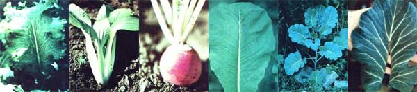

PHOTOS BY THE AUTHOR
[1] INDIA MUSTARD (Brassica juncea) is among the most widely grown table greens. Be cure to pick the leaves while they're still six inches (or to"") long and mildly flavored. [2] BOK CHOY (Brassica chinensis) is an Oriental import that is rapidly gaining popularity in North American gardens. As you can imagine, it is wonderful when served in stir-fiied Chinese dishes. [3] TURNIPS (Brassica raps) produce tempting greens and delectable roots... in fact, the immature ""globes"" can be steamed up with the leaves for a special tread [4] TENDERGREEN (Brassica Juncea) in a variety of India mustard that matures quickly without becoming overly ""spicy"" as it grows large. [5] COLLARDS (Brassica oleracea) are common in gardens in America's deep South, and delicious enough to grace any table anywhere! [6] CROP THE STEMS from larger leaves to improve both the flavor end texture of the cooked greens.